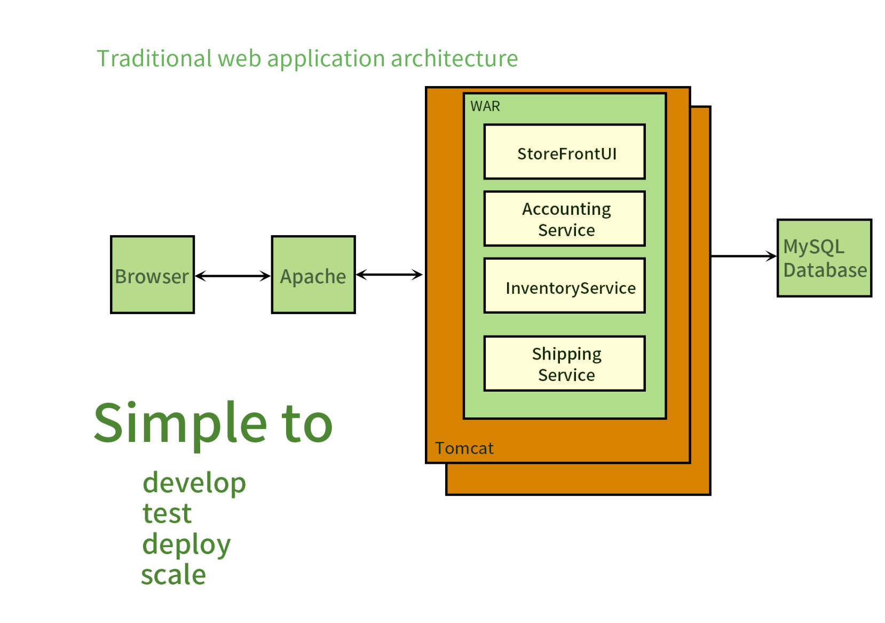
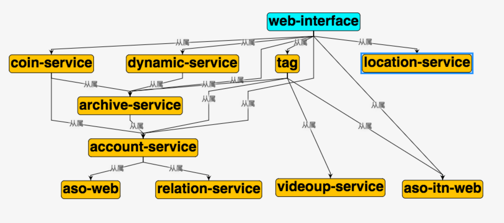
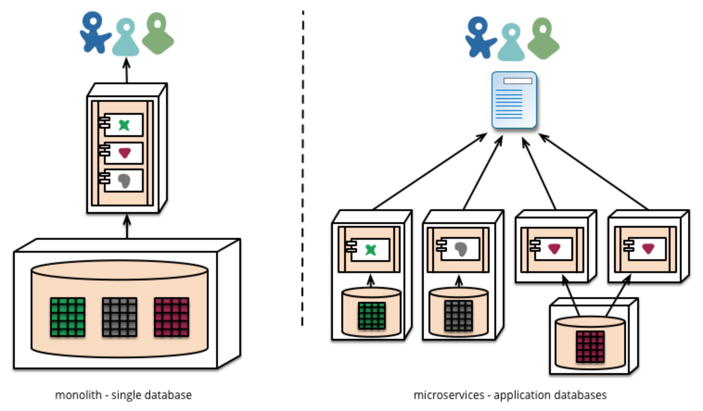
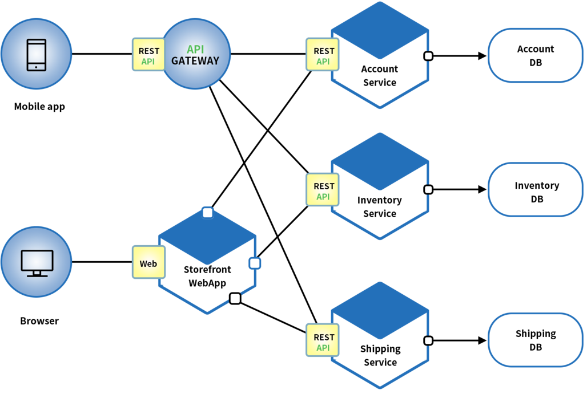
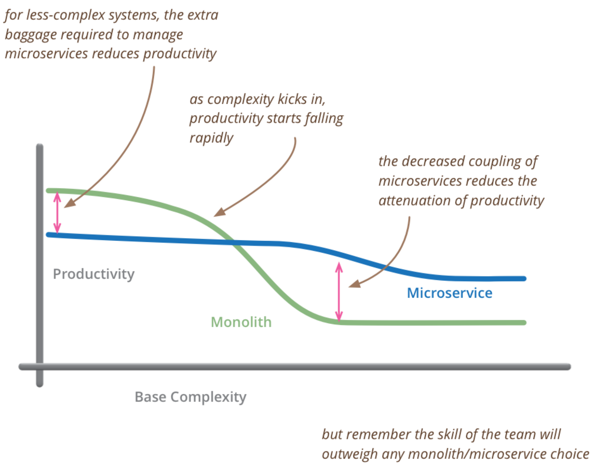
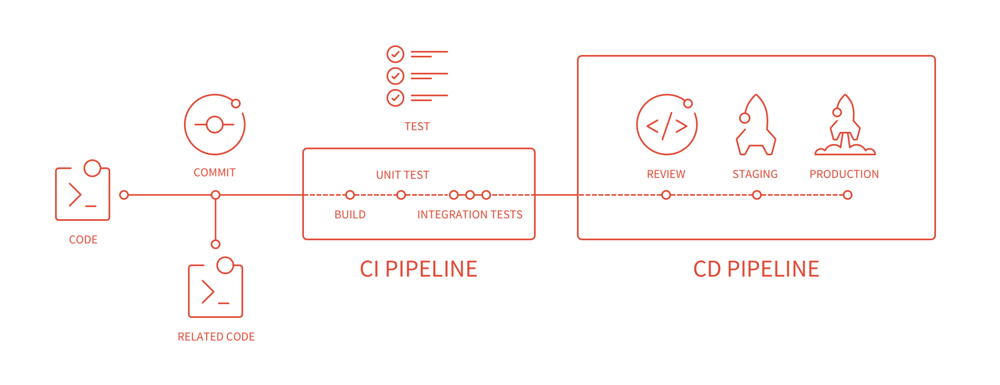

微服务概览与治理
微服务概念
单体架构
尽管也是模块化逻辑，但是最终它还是会打包并部署为单体式应用。其中最主要问题就是这个应用太复杂，以至于任何单个开发者都不可能搞懂它。应用无法扩展，可靠性很低，最终，敏捷性开发和部署变的无法完成。
我们应对的思路：
- 化繁为简，分而治之


微服务起源
大家经常谈论的是一个叫 SOA（面向服务的架构模式），它和微服务又是什么关系？你可以把微服务想成是 SOA 的一种实践。

- 小即是美：小的服务代码少，bug 也少，易测试，易维护，也更容易不断迭代完善的精致进而美妙。
- 单一职责：一个服务也只需要做好一件事，专注才能做好。
- 尽可能早地创建原型：尽可能早的提供服务 API，建立服务契约，达成服务间沟通的一致性约定，至于实现和完善可以慢慢再做。
- 可移植性比效率更重要：服务间的轻量级交互协议在效率和可移植性二者间，首要依然考虑兼容性和移植性。
You should instead think of Microservices as a specific approach for SOA in the same way that XP or Scrum are specific approaches for Agile software development.
微服务定义
围绕业务功能构建的，服务关注单一业务，服务间采用轻量级的通信机制，可以全自动独立部署，可以使用不同的编程语言和数据存储技术。微服务架构通过业务拆分实现服务组件化，通过组件组合快速开发系统，业务单一的服务组件又可以独立部署，使得整个系统变得清晰灵活：

- 原子服务
- 独立进程
- 隔离部署
- 去中心化服务治理
缺点:
- 基础设施的建设、复杂度高
微服务不足
Fred Brooks 在30年前写道，“there are no silver bullets”。但凡事有利就有弊，微服务也不是万能的。

- 微服务应用是分布式系统，由此会带来固有的复杂性。开发者不得不使用 RPC 或者消息传递来实现进程间通信；此外，必须要写代码来处理消息传递中速度过慢或者服务不可用等局部失效问题。
- 分区的数据库架构，同时更新多个业务主体的事务很普遍。这种事务对于单体式应用来说很容易，因为只有一个数据库。在微服务架构应用中，需要更新不同服务所使用的不同的数据库，从而对开发者提出了更高的要求和挑战。
- 测试一个基于微服务架构的应用也是很复杂的任务。
- 服务模块间的依赖，应用的升级有可能会波及多个服务模块的修改。
- 对运维基础设施的挑战比较大。
组建服务化
传统实现组件化的方式是通过库（library）,库是和应用一起运行在进程中，库的局部变化意味着整个应用的重新部署。通过服务来实现组件，意味着将应用拆散为一系列的服务运行在不同的进程中，那么单一服务的局部变化只需要重新部署对应的服务进程。我们用Go实施一个微服务：
- kit: 一个微服务的基础库（框架）
- service: 业务代码+kit依赖+第三方依赖组成的业务微服务
- RPC + message queue: 轻量级通讯
本质上等同于，多个微服务组合（compose）完成了一个完整的用户场景（usecase）。
按业务组织服务
按业务能力组织服务的意思是服务提供的能力和业务功能对应，比如：订单服务和数据访问服务，前者反应了真实的订单相关业务，后者是一种技术抽象服务，不反应真实的业务，
后者是一种技术抽象服务，来反应真实的业务。所以按照微服务架构理念来划分服务时，是不应该存在数据访问服务这样一个服务的。
事实上传统应用设计架构的分层结构反应了不同角色的沟通结构。所以所要按微服务的方式来构建应用，也需要对应调整团队的组织架构。每个服务背后的小团队的组织是跨
功能的，包含了实现业业务所需要的全面的技能。
一般公司的业务模式：大前端（移动Web）> 网关接入 > 业务服务 > 平台服务 > 基础设施（Paas/Saas）开发团队对软件在生产环境的运行负全责！
去中心化
每个服务面临的业务场景不同，可以针对性选择合适的技术解决方案。但也需要避免过度多样化，结合团队实际情况来选择取舍，要是每个服务都用不同的语言的技术栈来实现，
维护成本就会很高。
- 数据去中心化
- 治理去中心化
- 技术去中心化
每个服务独享自身的数据存储设施（缓存、数据库等），不像传统应用共享一个缓存和数据库，这样有利于服务的独立性，隔离相关干扰。
基础设施自动化
无自动化不微服务，自动化包括测试和部署。单一进程的传统应用被查分为一系列的多进程服务后，意味着开发、调试、测试、监控和部署的复杂度都会相应增大，
必须要有合适的自动化基础设施来支持微服务架构模式，否则开发、运维成本将大大增加。
- CI/CD: gitlab + gitlab hook + kubernetes
- Testing: 测试环境、单元测试、API自动化测试
- 在线运行时：kubernetes，以及一系列 prometheus、elk、control panel

可用性 & 兼容性设计
著名的Design For Failure 思想，微服务架构采用粗力度的进程通信，引入了额外的复杂性和需要处理的新问题，如网络延迟、消息格式、负载均衡和容错，忽略其中任何一点
都属于对”分布式计算的错误”。
- 隔离
- 超时控制
- 负载保护
- 限流
- 降级
- 重试
- 负载均衡
一旦采用了微服务架构模式，那么在服务需要变更时我们要特别小心，服务提供者的变更可能引发服务消费者的兼容性破话，时刻谨记保持服务契约（接口）的兼容性。
Be conservative in what you send, be liberal in what you accept.
发送时要保守，接受时要开放。按照波斯塔尔法则的思想来设计和实现服务时，发送的数据要更保守，意味着最小化的传递必要的信息，接收时更开放一位置要最大限度的容忍
冗余数据，保证兼容性。
微服务设计
API Gateway
我们进行了SOA服务化的架构演进，按照垂直功能进行了拆分，对外暴露了一批微服务，但是因为缺乏统一的出口面临了不少困难

我们新增了一个app-interface用于统一的协议出口，在服务内进行大量的dataset join，按照业务场景来设计粗力度的API，给后续服务的演进带来的很多
优势：
- 轻量交互：协议简单、聚合。
- 差异服务：数据裁剪以及聚合、针对终端定制化
API - 动态升级：原油系统兼容升级，更新服务而非协议
- 沟通效率提升，协作模式演进为移动业务+网关小组
BFF 可以认为是一种适配服务，将后端的微服务进行适配（主要包括聚合裁剪和格式适配等逻辑），向无线端设备暴露友好和统一的 API，方便无线设备接入访问后端服务。